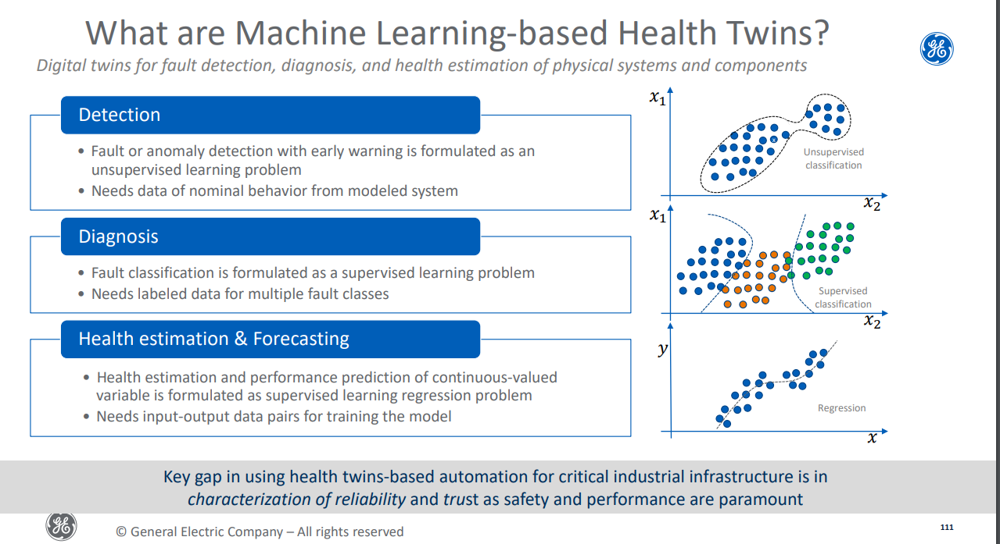

ideas
Development of a near-autonomous diagnostic and decision-making framework for HTR-PM.
What is Autonomous Control System(ACS)?
Autonomous control systems are intelligent systems with self-governance ability to perform and execute control functions in the presence of uncertainty for an extended time. The degree of autonomy of an autonomous control system depends upon the extent to which it can perform fault diagnosis, planning, forecasting, and decision-making under uncertainty, without human intervention.
What is Near-Autonomous Diagnostic and Decision-Making (NADDM)framework ?
NADDM is a framework that provides recommendations to operators for plant modes ranging from normal operation to accident management. NADDM is a nearly autonomous system because the system only provides recommendations to the operators, yet the operator still holds the authority to make any decision. NAMAC has the potential to make a transition from the operator-centric plant control system to an AI-guided plant control system, where the decision-making process is automated.
- The system utilizes simulation-informed data-driven training, AI-guided inference, faster-than-real-time simulation, knowledge-based operating procedures, and severe accident management guidelines to aid in the establishment of the risk-informed decision-making process for normal operation, anticipated operational occurrences (AOO), Design Basis Accident (DBA), and Beyond Design Basis Accident (BDBA).
- There are two main advantages: 1) reducing human error and 2) recommending optimized action.
- The process leads to close the gap between risk-informed decision making for a real plant and risk assessment by “unnecessary conservatism”, which is based on predetermined conservative assumptions from traditional safety analysis.
- For the proof of concept study presented in this paper, the objective of the NAMAC system is to re-establish normal flow conditions during a single LOFA scenario.
Diagnosis scope or accident scope
- In order to identify the physical damage states, selecting the obvious variable which represents the plant damage is required.
system strcture
Knowledge base
issue space
Issue space defines the scenario in mathematical formulations.
simulation tool
The simulation tool (system code with adequate fidelity) is required for generating training/testing data set for the development of different DTs.
data repository
Data repository has two elements: knowledge element and data element. Knowledge element consists of literature or information related to operating procedures and training materials, system configuration, initial conditions, reactor failure modes, experimental data, benchmarking results, etc. Data element consists of data generated by the simulation tool for development of NAMAC DTs and plant data collected from operational histories, transients, and events.
Digital Twin(DT) development layer
A DT is a digital representation of a physical object or system that relies on real-time and past-history data to evaluate its complete states, to predict future transients, and to recommend appropriate control actions.
Kahlen et al. (Kahlen et al., 2017) define DT based on three attributes: digital twin prototype (DTP), digital twin instance (DTI), and digital twin environment (DTE).The DTE represents the application space for operating the DTs, and it can be further classified into predictive and interrogative DTEs. The predictive DT, sometimes known as prognosis DT, is used for predicting future behavior, and the predictive performance starts from the current point in the product’s lifecycle at its current state, and moves forward in time. The interrogative DT, also known as diagnosis DT, is used to interrogate the current and past histories of certain objects or systems.The DTE is limited to applications of system controls for advanced NPPs and referred to as DT functions
These DTs can be treated as surrogate models for specific sets of information and knowledge from the knowledge base.
Digital Twin for Diagnosis (DT-D) aims to monitor the unmeasurable and unobservable state variables by storing correlation and dependencies among different state variables. DT-D is used to determine the unobservable state variables that are potentially safety-significant, defined as Safety-Significant Factors (SSFs), including peak fuel centerline temperature and peak cladding temperature. The obtained values are fed to (1) prognosis for predicting future transients (2) strategy inventory for determining available control actions (3) discrepancy checker for continuous monitoring.
$$
SSF(t)= f_{DT-D}(X_D,P_D,KB_D)+\varepsilon_D
$$Digital Twin for strategy inventory (DT-SI) aims to identify available actions based on the current state of the reactor (i.e., diagnosed plant state at the current time step), reactor’s safety limits, and component’s control limits. Implementation of strategy inventory requires knowledge of reactor system dynamics, technical specification, operating procedure, etc.
Digital Twin for Prognosis (DT-P) is used to predict the short-term transient and the consequences of control actions by storing the time-propagation of state variables with respect to reference information, including initial conditions, control actions, histories, etc. Compared to prognosis by direct plant models, data-driven models can make predictions with acceptable accuracy starting from an arbitrary point during a transient. Moreover, the running speed of DT-P by data-driven methods is fast enough to support real-time operations. The DT-P reads reactor information from DTD, together with available control actions, to predict the future transients of reactor states or consequences over a certain time range.
$$
C_{A,X}=f_{DT-P}(A,X_{t_0},P_P,KB_P)+\varepsilon_P
$$Digital Twin for Strategy Assessment (DT-SA) can be described as a decision-making module that aims to rank the control actions based on a consequence factor (obtained from prognosis) and a user-defined preference structure. The DT-P outputs are mainly used by strategy assessment for deciding the best strategies according to certain preference structures, which represent the preference of operator or risk management team to the economic and safety of a reactor.
strategy assessment is performed by finding the limit surface (Smith et al., 2015) where the control inputs cause transition from safe to unsafe consequences. Control options are ranked based on the safety margin, while impact of component reliability.
NAMAC operational layer
Since NAMAC aims to support operators’ decision-making by making recommendations, a logic scheme is needed to support the final recommendation based on real-time observations and records by DTs. For example, NAMAC needs to figure out the complete states of the reactor by monitoring the unobservable state variables with DT-D; NAMAC also needs to understand the consequences of control actions by predicting the short-term transient of state variables with DT-P.
Plant simulator
The EBR-II model is first modelled in steady state with GOTHIC to establish the normal operation regime of the plant. GOTHIC outputs a restart file representative of the steady state and a transient scenario is implemented through a GOTHIC-formatted text-based file called GOTHIC Command File (GCF).Perturbed variables (e.g. a pump speed change, a valve speed closure etc.) are flagged in the GCF to allow RAVEN sampling. A separate XML-based input file defines the RAVEN settings: number of samples (N), distribution type associated to the variables, variable bounds, and targeted outputs (i.e. potential features).The RAVEN execution replaces the variables drawn from the RAVEN source code into the GCF and runs successively the N samples with the GOTHIC solver. At the end the N GOTHIC executions, RAVEN parses the GOTHIC outputs (SGR files) and dumps the targeted parameters into a Comma separated file (CSV) or a HDF5 files.
- Simulate the accident scenario for the case study;
- Generate virtual sensor data for plant state diagnosis;
- Accept control recommendations from NAMAC system.
NAMAC operation

HTR-PM


用于预防性维修和优化操作效率
通过预训练模型自我进化
对诊断结果给出不确定性评估，准确率较低时请求操作员帮助
